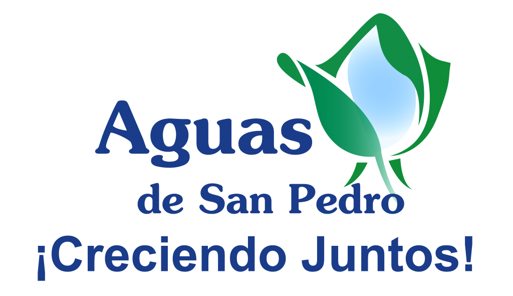

<ion-view view-title="Aguas de San Pedro">
  <ion-content>
    <!--<h1></h1>-->
      <!---->
      
      
      <div class="list card">
          <div class="item item-body">
              <p>
                  Aguas de San Pedro es, desde el primero de febrero del 2001, la empresa concesionaria de
                  los servicios de agua potable y alcantarillado sanitario del municipio de San Pedro Sula.
              </p>
          </div>
          <div class="item item-body">
              <h2>Misi&oacuten</h2>
              <p>
                  Nuestra mision es administrar de manera eficiente y competitiva el servicio de Agua Potable 
                  y Alcantarillado Sanitario de la Ciudad de San Pedro Sula, integrando a nuestro modelo de 
                  gesti&oacuten el sentido social, la protecci&oacuten del medio ambiente y el respeto de las normas 
                  nacionales de calidad.
              </p>
          </div>
          
          <div class="item item-body">
              <h2>Visi&oacuten</h2>
              <p>
                  Nuestra visi&oacuten es convertirnos en una concesionaria l&iacuteder de agua y saneamiento, fortaleciendo 
                  nuestras capacidades t&eacutecnicas y financieras para proporcionar soluciones a los problemas y 
                  necesidades demandadas por nuestros usuarios.
              </p>
          </div>

      </div>
</ion-content>
</ion-view>
